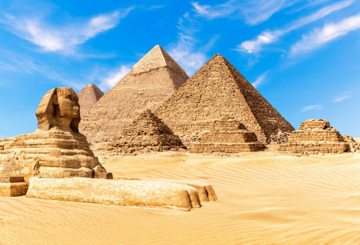
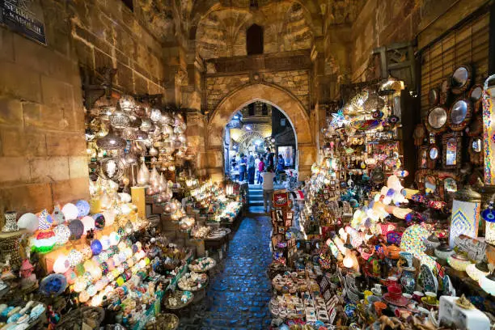
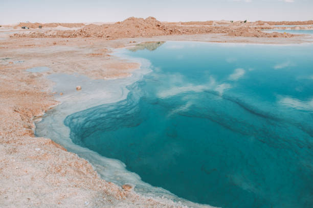

Top Tourist Attractions in Egypt
The pyramids الاهرامات
The Pyramids are one of the most famous landmarks in Egypt. They were built a long time ago as tombs for kings called pharaohs. The biggest pyramid is the Great Pyramid of Giza. It is one of the Seven Wonders of the Ancient World! Many people visit Egypt to see the pyramids and learn about ancient history.
Khan El Khalili خان الخليلي
Khan El Khalili is a famous market in Cairo, Egypt. It is full of small shops that sell souvenirs, handmade crafts, jewelry, spices, and traditional clothes. The market has been around for hundreds of years and is a great place to see Egyptian culture. Visitors love walking through its narrow streets and enjoying the beautiful colors, smells, and sounds.
Siwa Oasis (واحة سيوة)
Siwa is a beautiful oasis in the Western Desert of Egypt, near the border with Libya. It is known for its natural beauty, palm trees, salt lakes, and hot springs. Siwa is also famous for its old mud-brick buildings and the ancient Temple of the Oracle, which was visited by Alexander the Great. People love visiting Siwa to enjoy peace, nature, and the unique culture of the Siwan people.